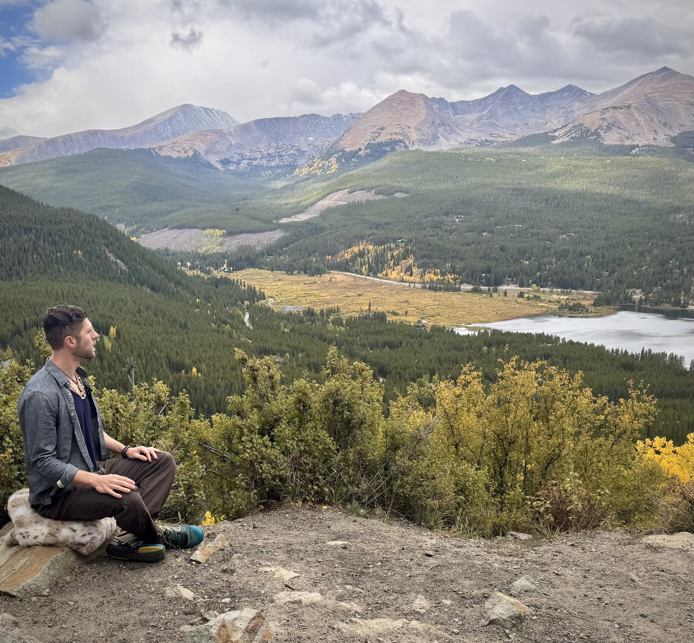

How It Began
When I was 18 years old, my best friend Ian told me I could choose any book from the bookstore where he worked. I still remember wandering through the aisles — Travel, History, Fiction — until I reached the Spirituality section and felt unexpectedly drawn to the books on Buddhism.
One title seemed to leap off the shelf: Awaken the Buddha Within by Lama Surya Das.
Raised without religion, I hadn't expected to become interested in meditation. But something in me recognized that this path might hold answers to suffering, meaning, and the deeper possibilities of being human.
That moment began a lifelong journey.
Study, Travel & Practice
I immersed myself in the world's spiritual and philosophical traditions, and my curiosity eventually became formal study. I earned a degree in Anthropology and Religious Studies, exploring how culture, consciousness, and wisdom traditions shape human life.
Books opened the door — but direct experience changed everything.
In 2005, while in Bodh Gaya, I met Chokyi Nyima Rinpoche. Encountering a living meditation master rooted in an unbroken contemplative lineage was profoundly impactful. It showed me that meditation was not just philosophy or theory — it was something alive, embodied, and transmissible.
After college, I traveled to Nepal to deepen my study and practice. I arrived without a clear career plan, but with a sincere wish to grow, to understand the mind, and to help others in a meaningful way.
A Broad Path of Training
Over the years, I've studied with Tibetan Buddhist, Zen, and contemporary teachers, integrating ancient contemplative wisdom with modern psychology and neuroscience.
My path has included retreats and study with teachers such as Yongey Mingyur Rinpoche, Joe Dispenza, Sam Harris, and John Churchill.
This diversity of training allows me to meet people where they are — whether they are spiritually curious, psychologically minded, skeptical, or deeply committed to inner growth.
What Meditation Has Taught Me
Meditation can be transformative — but it is not magic.
It does not replace therapy, healthy relationships, embodiment, emotional honesty, or the practical work of healing and growing up.
What it can offer is profound support: greater awareness, steadiness, compassion, freedom from old patterns, and a deeper relationship with life itself.
Even in the middle of stress, pain, or confusion, each moment contains the possibility of more clarity & greater presence.

How I Teach Today
Today I teach meditation in a grounded, trauma-informed, psychologically mature way.
My approach blends contemplative depth with real-world practicality. I help people use meditation not as an escape from life, but as a way to meet life more fully — with wisdom, courage, and compassion.
Whether you are seeking healing, awakening, emotional balance, or a deeper sense of meaning, meditation can become a powerful ally on the path.